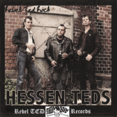

Rebel Ted Rock - Hessen Teds (Album, 2010)
01 - Intro (0:14)
02 - Hard Rockin Teddygirl (2:56)
03 - Sechsunverzich (2:02)
04 - I Don't Know (2:38)
05 - Rock 'n' Roll (2:39)
06 - May-Pearl (2:48)
07 - Years Go By (2:50)
08 - Spin My Wheels (2:27)
09 - Still Love You (2:39)
10 - Caroline (2:13)
11 - My Own Tears (2:53)
12 - Record Hop (2:55)
13 - Rock 'n' Roll Is My Only Friend (2:11)
14 - Sorrow 'n' Pain (2:39)
15 - Revival Boy (2:54)
16 - Outro (0:08)
© Part Records :: [13611] Rebel Ted Records :: [TED-CD-105]
Notes
Review
079/366 (Project 366)
Very Teddy Boy Rock 'n' Roll.